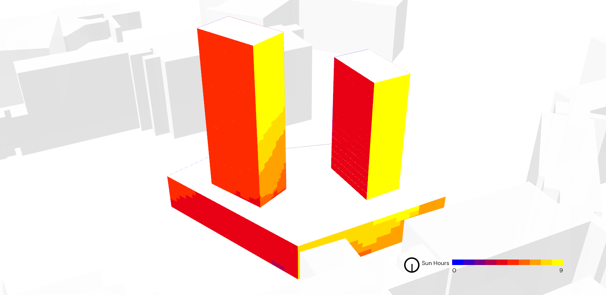
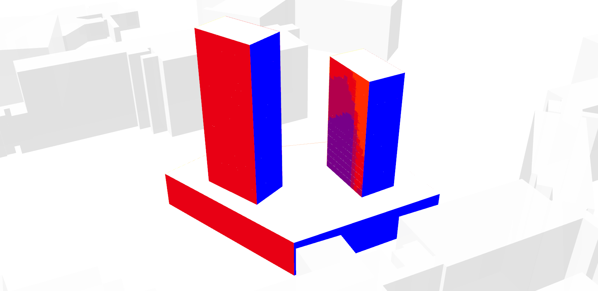

Image Switch On-Scroll Demo
This is related to the very basic demo that adds a class to an element when it scrolls to an arbitrary distance from the top of the viewport.
Here, the addition of a class reveals a hidden image, that is positioned over another image, to create a before and after image switch effect.
Works in modern browsers and IE9+
Please view the source of this page for HTML markup, CSS and JS.
Scroll Down...
The images below change...


Some text blurb...
Some text blurb...
Some text blurb...